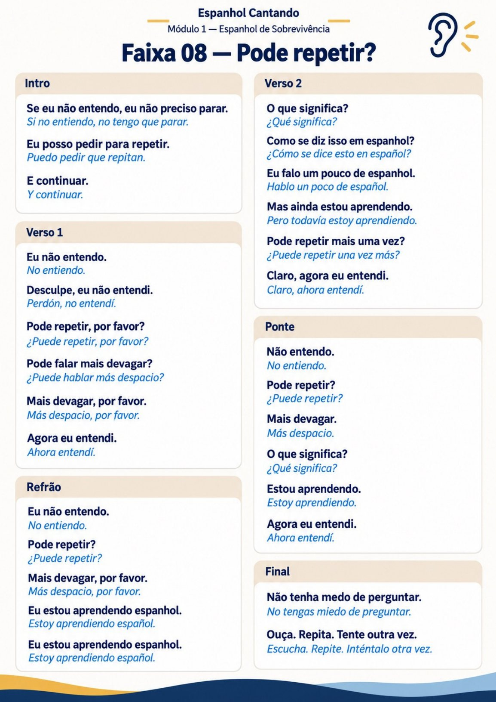
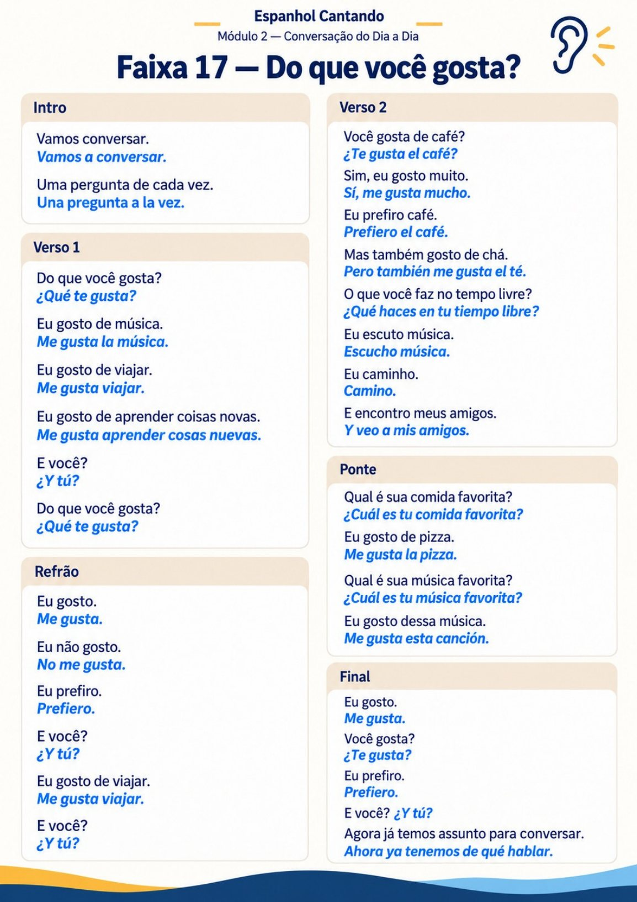
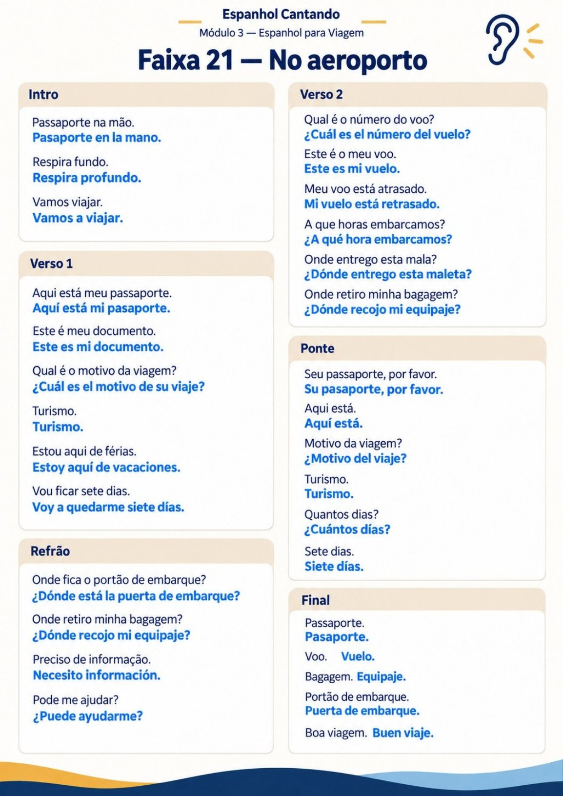
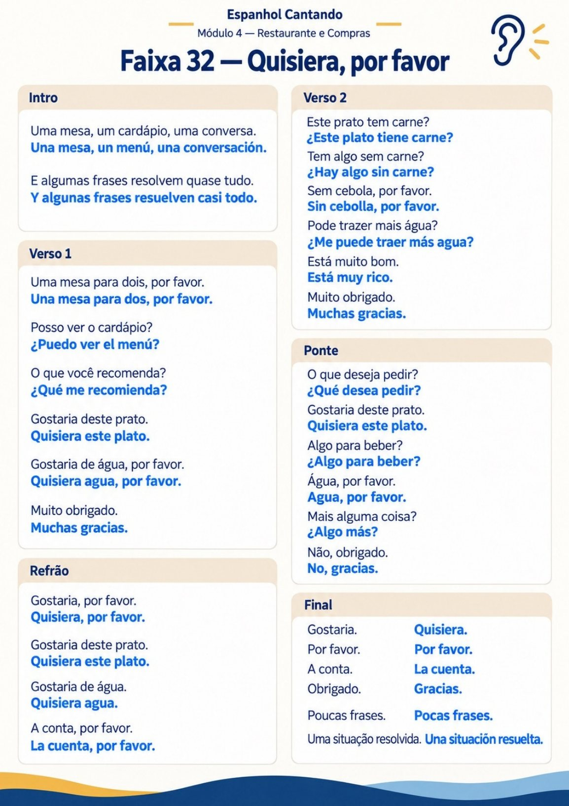
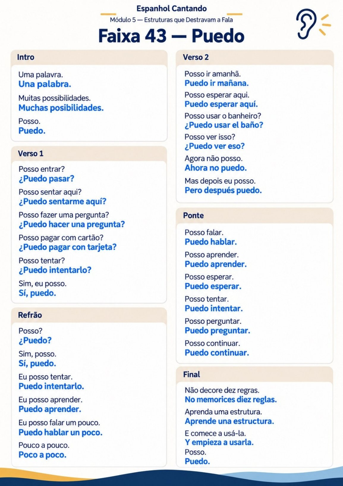
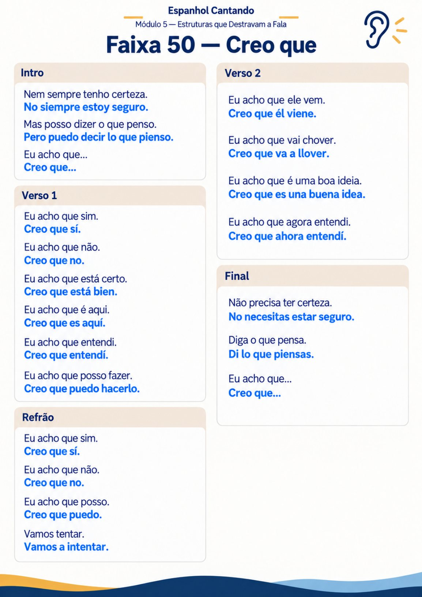
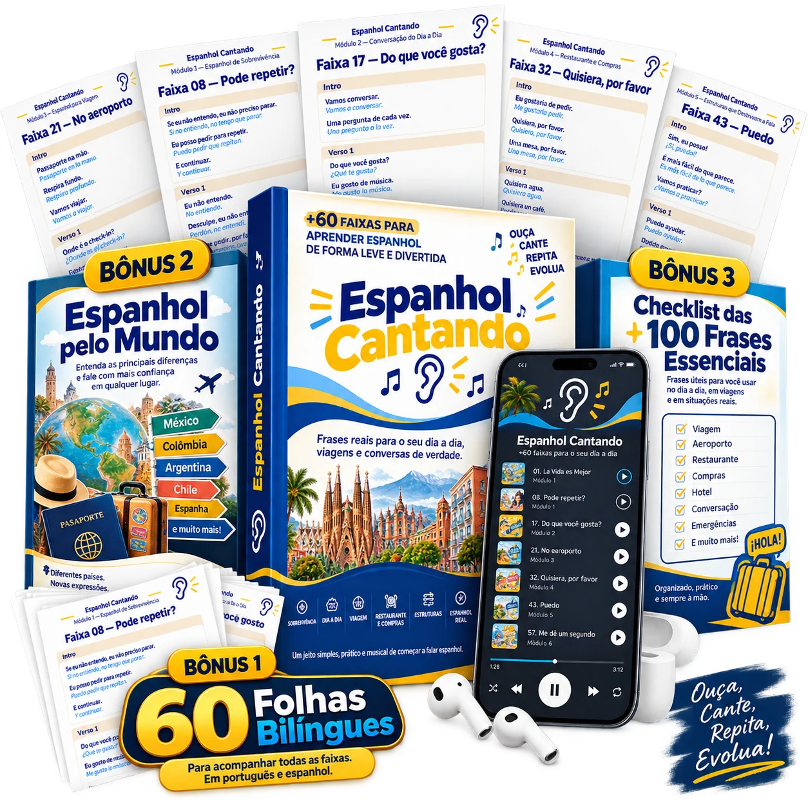
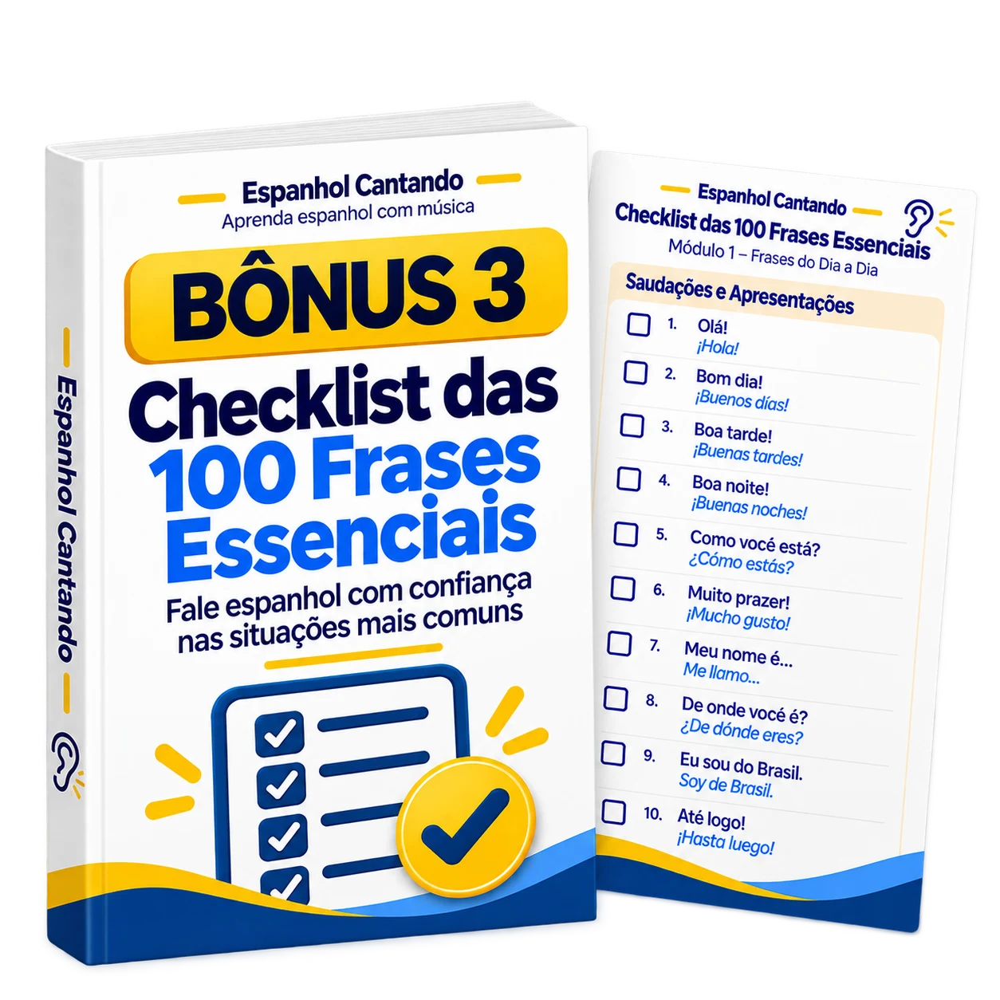

FAIXA 08 · SOBREVIVÊNCIA
Pode repetir?
Para pedir que alguém fale novamente.
Transforme momentos simples da sua rotina em prática: ouça, acompanhe e repita frases que você realmente pode usar — mesmo que hoje ainda trave para responder.
Pagamento único · Sem mensalidade · Garantia de 7 dias
Dê o play, escute frases úteis em situações diferentes e descubra como é simples praticar espanhol com música.
Para pedir que alguém fale novamente.
Para iniciar uma conversa de forma natural.
Frases para chegar e se orientar com mais segurança.
Para fazer pedidos com educação e clareza.
Uma estrutura curta que abre muitas possibilidades.
Para ganhar tempo sem abandonar a conversa.
Você acabou de conhecer 6 faixas. No acesso completo, são mais de 60 faixas organizadas para acompanhar sua evolução.
Melodia, ritmo e repetição criam pistas que ajudam o cérebro a reconhecer e recuperar uma sequência de palavras. Quando a frase em espanhol volta dentro da mesma música, sua sonoridade começa a ficar familiar e você ganha uma referência para repeti-la.
Em um estudo experimental com adultos, o grupo que aprendeu frases de um idioma desconhecido cantando teve melhor desempenho ao lembrar e produzir essas frases do que os grupos que praticaram falando.
Em vez de decorar palavras separadas, entende como elas aparecem juntas.
Ritmo e repetição tornam a estrutura mais reconhecível a cada reprodução.
O português apoia a compreensão enquanto o espanhol entra na sua rotina.
× Você entende palavras e expressões quando lê ou escuta devagar.
× Na hora de responder, tenta traduzir tudo mentalmente.
× Se a pessoa fala rápido, você perde o fio da conversa.
× Estuda listas isoladas, mas não sabe usar as palavras juntas.
O próximo passo é ouvir frases completas, entender o contexto e repeti-las até que as estruturas se tornem familiares e mais fáceis de usar.
Você pode acompanhar pelo celular, tablet ou computador — e também imprimir quando quiser estudar longe da tela.






As faixas curtas permitem que você pratique em pequenos momentos do dia, seguindo uma sequência já organizada.
Viagem, restaurante, compras, conversação ou estruturas úteis.
Veja a frase em português e espanhol enquanto escuta o contexto.
Volte à mesma faixa até reconhecer e reproduzir a estrutura com confiança.
Cada parte do material foi criada para facilitar um momento diferente da prática.
Ao ouvir novamente, você reconhece com mais rapidez palavras, sons e estruturas completas.
As folhas bilíngues ajudam você a compreender a frase sem interromper a prática para pesquisar.
Você escolhe o módulo, dá o play e sabe exatamente qual situação está praticando.
A música dá ritmo à repetição e ajuda a manter a frase presente por mais tempo.
Em vez de uma playlist solta, você recebe uma sequência organizada por objetivos e situações reais.
Frases essenciais para pedir ajuda, esclarecer e responder.
Perguntas e respostas para sustentar pequenas conversas.
Aeroporto, hotel, transporte, direção e imprevistos.
Pedidos, preços, pagamentos, tamanhos e preferências.
Construções curtas que você pode adaptar a várias conversas.
Expressões para ganhar tempo, reagir e continuar falando.
Você está começando e quer uma forma simples de praticar.
Reconhece palavras, mas trava ao montar uma frase.
Vai viajar e quer chegar mais preparado a situações comuns.
Tem pouco tempo e precisa encaixar o espanhol na rotina.
Aprende melhor ouvindo, repetindo e acompanhando visualmente.
Quer uma trilha pronta em vez de procurar conteúdos soltos.

Para ouvir, acompanhar e repetir sem depender de aulas longas.
Apresentação, viagem, restaurante, compras, hospedagem e conversação.
Frases em português e espanhol para consultar no celular, computador ou imprimir.
Você entende o contexto antes de escutar e repetir cada frase.
Conheça diferenças importantes do idioma entre países e regiões.
Uma revisão rápida para viagem, hotel, restaurante, compras e conversação.
Volte às faixas e aos materiais sempre que quiser.
Cada material complementa uma etapa da prática: acompanhar as faixas, compreender variações do idioma e revisar frases essenciais.
Leia as frases em português e espanhol enquanto escuta. Use digitalmente ou imprima.
Entenda diferenças importantes entre regiões sem misturar tudo enquanto está começando.

Um checklist rápido para revisar frases de viagem, hotel, restaurante, compras e conversação.
à vista, ou em até 12x de R$ 6,93
Acesse as faixas, abra as folhas e experimente o método com calma. Se quiser solicitar o reembolso dentro desse prazo, basta enviar um e-mail ao nosso suporte — o pedido leva menos de um minuto — e nós cuidamos do restante para devolver 100% do valor pago.
Pagamento único e protegido.
Após a aprovação do pagamento, o acesso é enviado para o e-mail informado na compra.
Acesse pelo celular ou computador e comece pelo Módulo 1.
Não. O material foi organizado principalmente para brasileiros iniciantes ou de nível básico. O português funciona como apoio para você entender o contexto antes de repetir em espanhol.
Não. Além das mais de 60 faixas, você recebe 60 Folhas Bilíngues, Espanhol pelo Mundo e o Checklist das 100 Frases Essenciais.
A base utiliza espanhol latino-americano de uso amplo, evitando excesso de regionalismos. O bônus Espanhol pelo Mundo apresenta diferenças importantes entre países e regiões.
Sim. Todo o material é digital e pode ser acessado pelo celular, tablet ou computador.
Sim. As folhas foram diagramadas para leitura digital e também para impressão.
Não existe tempo obrigatório. Como as faixas são curtas, você pode praticar por alguns minutos e repetir a mesma situação até se sentir mais familiarizado com as frases.
Após a aprovação do pagamento, o acesso é enviado em menos de um minuto para o e-mail informado na página de pagamento. Confira também as pastas de spam e promoções caso não encontre a mensagem na caixa de entrada.
Não. São R$ 67 em pagamento único. Não há mensalidade nem assinatura, e o acesso é vitalício.
Não. O acesso é vitalício e não há mensalidade. Você pode voltar às faixas e aos materiais sempre que quiser.
Pense em uma música que você ouviu muitas vezes e ainda consegue cantar. A melodia e o ritmo funcionam como pistas para lembrar a sequência das palavras. No Espanhol Cantando, você usa esse mesmo princípio para ouvir, compreender e repetir frases úteis em espanhol.
Sim. Você tem 7 dias para conhecer as faixas e os materiais. Se quiser solicitar o reembolso dentro desse prazo, basta enviar um e-mail ao nosso suporte. O pedido leva menos de um minuto e nós cuidamos do restante para devolver 100% do valor pago.
Escolha uma situação, dê o play, acompanhe e repita.
QUERO COMEÇAR AGORA →